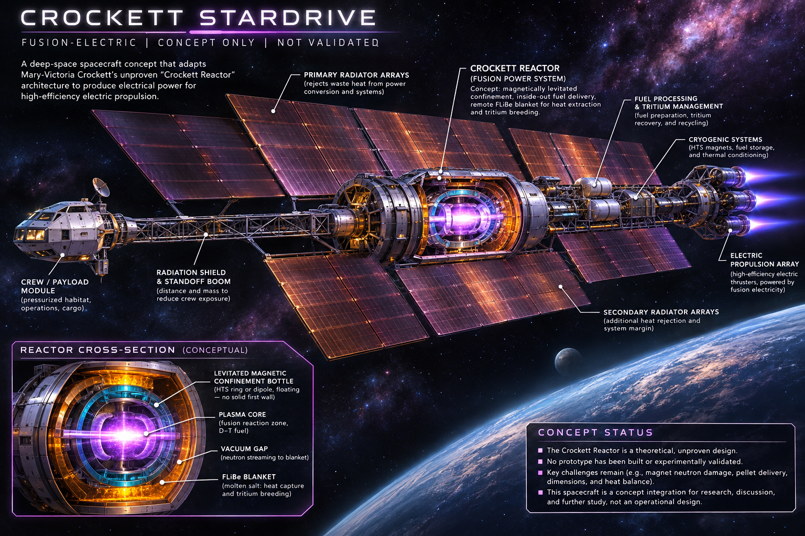
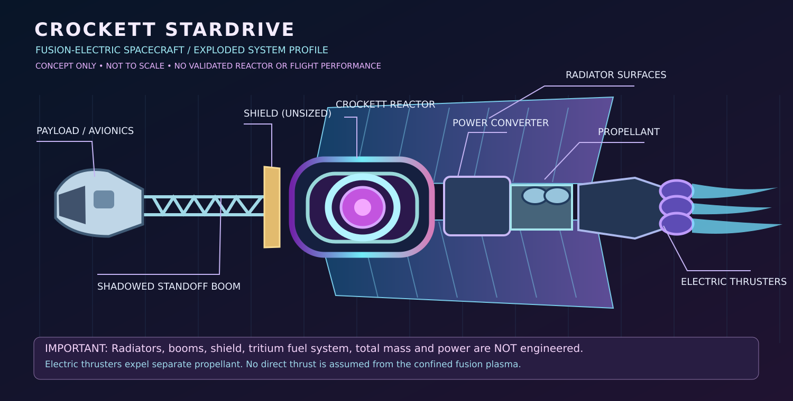
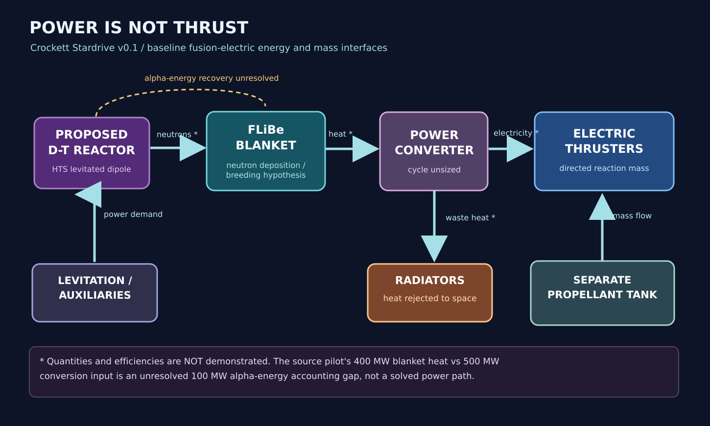
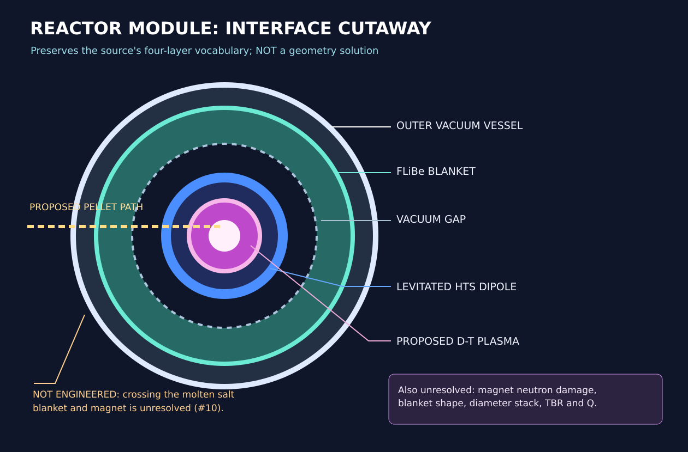

01 · The candidate source
The original reactor proposes an actively levitated HTS dipole, inside-out central pellet fueling, and FLiBe neutron capture/breeding. All integrated performance is unproven.
An honest, fusion-electric concept study built around Mary-Victoria Crockett's proposed levitated-dipole fusion reactor. The spacecraft uses a separate propellant-fed electric thruster array: fusion supplies possible electricity, not an assumed thrust nozzle.

fusion-electric baselineno mission selectedopen questions retainedThe original reactor proposes an actively levitated HTS dipole, inside-out central pellet fueling, and FLiBe neutron capture/breeding. All integrated performance is unproven.
Recoverable thermal energy feeds an unsized generator. Net electric power is split among propulsion, cryogenics, controls and other spacecraft needs.
Electric thrusters accelerate a separate stored propellant. Waste heat travels to large radiator surfaces. A boom and shielding are proposed for payload isolation.

Illustrative layout only. No module, shield, or radiator has validated dimensions.

The original source has a 100 MW accounting gap at its 500 MWth ground-plant reference point: about 400 MW is shown deposited in FLiBe, while the projected electrical cycle assumes 500 MW enters conversion. That cannot be silently transferred to a rocket.

Close the nesting of chamber, salt blanket, gap, and dipole. Work out whether and how pellets can traverse the blanket and magnet.
Estimate displacement damage to the levitated HTS coil, breeding yield, and shield dose under one consistent geometry.
Track every thermal watt, choose a realistic power cycle and radiator model, then calculate complete mass-to-power.
Read the full test-plan crosswalk · Inspect the power arithmetic · Open technical README